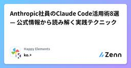

Happy Elementsのフィード
https://zenn.dev/p/happy_elements
京都でスマートフォン向けゲームを開発・運営している Happy Elements カカリアスタジオの Publication です
フィード

Anthropic社員のClaude Code活用術8選 — 公式情報から読み解く実践テクニック
 700
700
Happy Elementsのフィード
Anthropic社の方々が「Claudeをどう使っているのか」を発信されているものを8個にまとめてみました。※本記事はAnthropic公式ブログ、Boris Chernyのポッドキャスト等に基づいています（詳細は末尾の参考リンク一覧）。 1. 「コンテキストエンジニアリング」— 指示の質より環境の設計、複利的エンジニアリングへ2026 Agentic Coding Trends Reportでは、「 プロンプトエンジニアリングからコンテキストエンジニアリングへの移行 」というパラダイムシフトが起きていると指摘しています。プロンプトが「今回の指示」であるのに対し、コンテキスト...
3日前

Unity Graph Toolkit(experimental版)を使ってみました
Happy Elementsのフィード
はじめに現在開発中のゲームの敵の行動パターンをビヘイビアツリーを使って実現しようとしています。最初なのでそんなに複雑な行動も作らないだろうという想定で、基本的な仕組みだけ実装を行い、構造はScriptableObjectにSerializeReferenceを使ってビヘイビアツリーの形式で行動情報を構築するという形で実装を行っていました。編集はInspectorから行い、将来的にGraph Toolkitの正式版(1.0版)がリリースされたらグラフでの編集ツールを作れば良いかなと思っていたのですが、想定以上に行動パターンが複雑化して、流石に使い辛いという話になりました。そこで...
24日前
【Claude Code】Agent Teamsに「ホワイトボード」を1つ置いたら、分業が協働に変わった
Happy Elementsのフィード
「ホワイトボード」を1つ置いたら、分業が協働に変わったClaude CodeのAgent Teamsで、同じ分析タスクを2回実行しました。1回目はデフォルト構成で2人のエージェントにそれぞれ別の役割を割り当てて並列実行しました。結果は 2つの質の高い独立レポート でした。しかし2つを並べると、互いの内容を参照した記述がどこにもありませんでした。2回目は リーダーが共有Markdownファイル（ホワイトボード）を1つ用意しただけ です。結果はこうなりました。観点1回目 - デフォルト構成2回目 - ホワイトボードあり相互参照なしAgent BがAgent...
1ヶ月前
【Claude Code】Agent Teamを役割ではなく「4つの性格」で組んだら、議論の性質が変わった
Happy Elementsのフィード
はじめに — Agent Teamをどう「編成」するかClaude CodeにAgent Teamが登場して、複数のエージェントを並列に動かせるようになりました。最初に考えたのは「役割で分ける」ことでした。フロントエンド担当、バックエンド担当、テスト担当。タスクを分割して、それぞれに任せる。効率的に見えます。これはタスクを並列に処理したい場面では有効です。ただ、設計判断など 「考える」ことが中心のタスクでは、別のアプローチもあるのではないかと感じました。「役割」ではなく「考え方」で分けたらどうなるか——そこで試したのが 「性格で分ける」 というアプローチでした。 4つの性...
1ヶ月前
Claude Codeにコードジェネレーターを作らせるのがとても良かった
Happy Elementsのフィード
はじめにこれまでの開発シーンでは、OpenAPIなどのスキーマ定義ファイルを最上流のファイルとして、そこからRuby、Go、C#などのコードを自動生成する手法があったと思います。!弊社（Happy Elements）ではサーバーサイド言語としてRubyを採用することが多いですが、プロジェクトの特性やパフォーマンス要件に応じてGoなどの他言語を選択する場合もあります。しかし、Claude Codeの登場によって、このフローに大きな変化を感じています。私のプロジェクトでClaude Codeを使って 「Goのstruct定義（もしくはDB用のSQL定義）」を最上流のファイルと...
1ヶ月前
【Claude Code】Agent Team時代の .claude/rules/ 徹底解説 — CLAUDE.md だけでは足りない理由
Happy Elementsのフィード
はじめにClaude Codeを活用した開発の実体験と公式ドキュメントの情報をもとに、.claude/rules/ディレクトリを使ったルール設計のベストプラクティスをまとめました。Claude CodeのAgent Teamが登場し、複数のAIエージェントが並列でコードを書く時代になりつつあります。（※2026年2月時点では実験的機能。settings.jsonでCLAUDE_CODE_EXPERIMENTAL_AGENT_TEAMSを有効化する必要があります）Agent Teamを前提にすると、CLAUDE.mdにすべてのルールを集約する従来の方法では、各エージェントが不要な...
1ヶ月前
Homebrew で始める Claude Code：インストールから初期設定まで
Happy Elementsのフィード
ステップ1：有料プランに登録Claude Codeを使用するには、有料プランへの登録が必要となります。https://claude.com/ja-jp/pricing ステップ2：プライバシー設定必要に応じてプライバシー設定を行います。手順：https://claude.ai にログイン設定 → プライバシー ステップ3：Claude Codeをインストールbrew install --cask claude-code確認：claude --versionアップデート：brew upgrade claude-code ステップ4：認証c...
2ヶ月前
ECSマネージドインスタンス オートスケール速度調査
Happy Elementsのフィード
はじめに2025年9月30日にECS マネージドインスタンスが発表されました。https://aws.amazon.com/jp/about-aws/whats-new/2025/09/amazon-ecs-managed-instances/マネージドインスタンスはfargate、ECS on EC2に変わる第三の選択肢で、AWSがインフラ管理を完全に担当しながら、EC2の全機能にアクセスできるフルマネージドなコンピュートオプションです。このマネージドインスタンスのオートスケールについてインスタンスの上がる速度を検証してみました。 検証railsの開発環境を使用してオ...
3ヶ月前
Unity製iOSアプリでクイックアクションを実装する
Happy Elementsのフィード
はじめにこんにちは、ゲームエンジニアのでぃとです。今回はUnity製iOSアプリでクイックアクションを実装する方法を紹介します！ クイックアクションって？クイックアクションとはiOS9から始まった機能で、3D Touchという押す強さに応じてリアクションが変化する技術を元に開発された物です。現在では3D Touchは廃止されてしまったため、アプリアイコンを長押しする事で表示されます。こういうものですね。ここにはアプリごとに任意の動作を実行することができるメニューを追加できます。メニューのアイコンや文言は自由に設定することができます。 今回作る物クイックアクシ...
4ヶ月前
あんさんぶるスターズ！！10周年UIアップデートで導入したコード自動生成とプレビュー機能
Happy Elementsのフィード
はじめにあんさんぶるスターズ！！（以下、あんスタ）では、10周年を機に大規模なUIアップデートを実施しました。Bright me up!! 10周年記念特設サイト｜あんさんぶるスターズ！！この記事では、このUIアップデートで導入したコード自動生成とプレビュー機能をご紹介します。デザイナーがプレハブ作成後にコード生成することで動作確認まで完結でき、エンジニアを待たずに先行して開発できるワークフローを実現しました。 従来の問題点あんスタのUIアップデート前は、以下のような課題がありました。 1. 複数アプリへのUIの組み込みの課題あんスタでは複数のアプリ（あんさんぶるス...
4ヶ月前
[Unity] SRDebuggerとVContainerを用いて簡単で安全なデバッグ機能を実装する
Happy Elementsのフィード
はじめにUnityでのゲーム開発時にデバッグ用のメニューを作ることはよくあると思います。エディタ上であればエディタ拡張で作ったり、実機でも使いたい場合は専用の画面を作ったりすることもあると思います。ただ、デバッグメニューはうまく実装しないとコード中に #if UNITY_EDITOR などを書いてまわらないといけなくなるなど、案外設計力が求められる部分でもあると思っています。今回はSRDebuggerとVContainerを用いてデバッグ機能を簡単に安全に実装してみた事例を紹介したいと思います。SRDebuggerとVContainerについては各ドキュメントを参照のうえ、すで...
4ヶ月前
10年のブランクを経て、Rails開発に挑戦した私がこの1年で「やっててよかった」6つのこと
Happy Elementsのフィード
はじめにゲームエンジニアのM.O.です。前職ではプログラマとして業務をしていましたが、キャリアを重ねるにつれて次第に管理業務が中心となり、約10年間、実装の現場から離れていました。そんな私が、再び開発の現場に戻り、Ruby on Railsを使った開発に挑戦し始めてから、1年が経ちました。特にサーバーサイドプログラミングは未経験だったため、日々が新しい学びの連続でした。この記事は、私と同じように、ブランクを経て再び実装の現場に戻ってきた方新しい技術領域（特にサーバーサイド）に挑戦しているエンジニアの方これからRuby on Railsを学ぼうとしている方に向けて...
6ヶ月前
[Unity] VContainerのエラーハンドリングについて
Happy Elementsのフィード
はじめにUnityでVContainerを使用していて、エラーハンドリングの方法に迷ったので書き留めておきます。やりたかったこととしては、画面遷移時に新しい画面がVContainerによって構築される際、エラーが吐かれたら遷移をキャンセルするという実装をしたかったのですが、思い外事例が見つけられませんでした。使用バージョン: VContainer v1.16.6UniTaskが入った環境を前提としています。 検討した結果LifetimeScope のBuildを実行して、 IStartable などで処理を開始していきたいケースについては、以下のような実装でエラーが起き...
6ヶ月前
Notion APIを使って画像をアップロードしてみました
Happy Elementsのフィード
はじめにチームで情報をnotionに集約したいという要望があり、google spread sheetやBoxからデータを引っ張ってきてnotionにページを作る対応をしていました。最近Notion APIで画像がアップロードできるようになったので使ってみました。 参考こちらの記事を参考にさせていただきました、ありがとうございます。 コード// png_upload_test.jsconst { Client } = require('@notionhq/client')const { openAsBlob } = require('node:fs')con...
8ヶ月前
UI組み込みをデザイナーさんに任せるための設計（メルモンでの事例）
Happy Elementsのフィード
「フィーリアのモンスターといっしょ！」（通称メルモン）の開発に関する内容です。https://mercstoria.happyelements.co.jp/merumon/※ メルモンの基盤の制作はぼくしか関わっておらず、個人の見解となります。メルモンではスキル向上や工数のことを考え、UIデザイナーさんにUIやアニメーションの組み込みまでしていただきました。ぼく自身、UIデザイナーさんに組み込みをしていただくような環境で作業をしたことはなかったため、どうなるのか好奇心半分、不安半分というところでした。とてもざっくりですが、図のような分担です。ここでは、主に「View用のプ...
10ヶ月前
「Unityでオブジェクトを移動させるとき、あるキーを押すだけで驚きの変化が・・・！？その秘密とは――」
Happy Elementsのフィード
Unityでオブジェクトを配置しているとき、微妙なズレに悩んだことはありませんか？実は、Shiftキーを押すだけで、その悩みをすっと解決できるんです。今回はそんな便利な小技を、ちょっと変わった「物語仕立て」でご紹介します。 「なんでズレるんだよ！」夜更け、ひとつの部屋にカチャカチャと軽快なキーボード音が響いていた。時計は深夜2時を回っている。モニターにはUnityのエディタ画面。オブジェクトを動かしては、ため息をつく青年がいた。名前はユウマ。今年からハッピーモーメンツ株式会社に入社したばかりの新米プログラマーだ。「また微妙にズレてる……！」彼はモニターに向かって小さ...
10ヶ月前
AWS SDK for Go を用いて S3 の条件付き書き込みのエラーをハンドリングする
Happy Elementsのフィード
AWS S3 の条件付き書き込み機能を用いた際の AWS SDK for Go でのエラーハンドリング方法です。BucketAlreadyExists などは専用の型が存在していますが、 2025/04/30 時点では PreconditionFailed に関するエラーは一般的なエラー型から判断する必要があります。AWS SDK for Go での API 呼び出しに関する操作は "github.com/aws/smithy-go" を利用しているため、 smithy-go のレスポンスエラーとしてハンドリングを行います。package mainimport ( "g...
1年前
Capacity Providerについて
Happy Elementsのフィード
はじめに業務でcapacity providerに触れる機会がありましたので、ご紹介したいと思います。 Capacity Providerとはcapacity providerとは、ECSクラスターが必要とする計算リソースの管理を簡素化し、インフラストラクチャのスケーリングを自動化するための機能です。つまり、作業者はcapacity providerを設定するだけでタスクのオートスケーリングをECSに任せることができる機能です。このcapacity providerは、ECSタスクが実行される計算リソース（EC2インスタンスまたはFargate）を指定するために使用されます...
1年前
Amazon Personalizeの導入検証
Happy Elementsのフィード
はじめにとあるミーティングで協調フィルタリングを利用できないかという話がありました。会社としてAWSを利用していることもあり、Amazon Personalizeの導入を検証してみようということとなりましたので、検証内容について記事にしようと思います。参考https://ja.wikipedia.org/wiki/協調フィルタリング Amazon PersonalizeとはAmazon Personalize は、データを使用してユーザーにアイテムのレコメンデーションを生成する、フルマネージド型の機械学習サービスです。また、特定のアイテムやアイテムメタデータに対...
1年前
知ってるとちょっと便利な「Constraint」の機能
Happy Elementsのフィード
はじめに業務上で積極的に使うことはあまりないのですが、知ってるとちょっとだけ便利な Unity の機能を紹介します。Unity Editor で演出等を作成する上で、アニメーションデザイナーさんに演出を作成いただく際、Animation Clip 等でいただくことが多いと思うのですが、処理の都合上、GameObject の親子関係を変えたいが、変更するとアニメーションが動かなくなるため親子関係を調整できないことがたまに発生します。アニメーションを調整してもらうのは手間がかかりすぎるし、アニメーション調整なしで動かそうとすると処理が煩雑になりすぎる場合、以下で解説する Const...
1年前